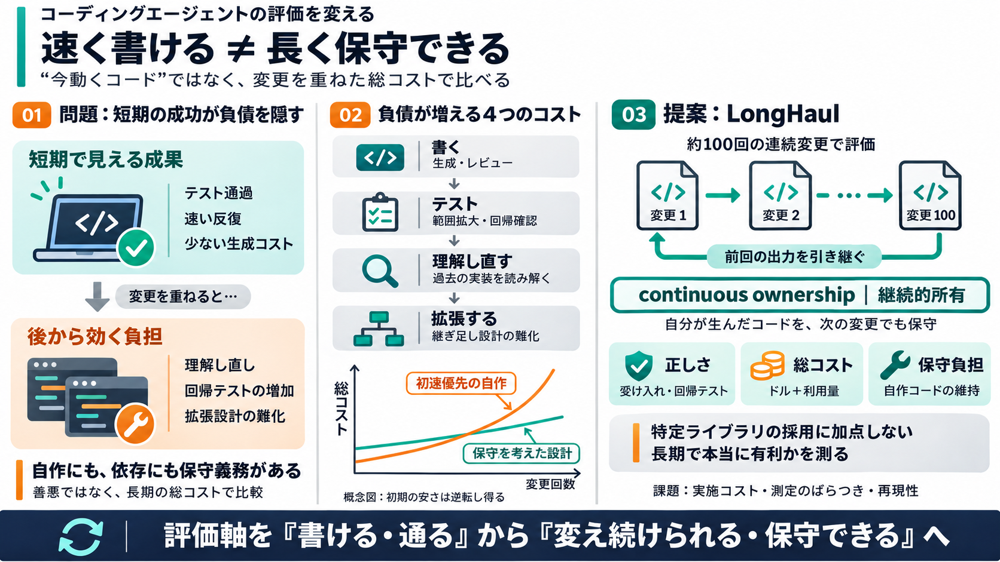

SlopCodeBench: Benchmarking How Coding Agents Degrade Over Long-Horizon Iterative Tasks (Mar 2026)
This paper introduces SlopCodeBench (SCBench), a language-agnostic benchmark designed to measure how AI coding agents ma…

This paper introduces SlopCodeBench (SCBench), a language-agnostic benchmark designed to measure how AI coding agents ma…
CodeFlowBench (Wang et al., 2025b) supplies gold-standard code for prior turns, so the agent never inherits the conseque…
Skip to content Snorkel Logo Snorkel Logo Get started Back to library NeurIPS · 2026 # SlopCodeBench: Benchmarki…
SlopCodeBench evaluates coding agents the way real software actually gets built: through repeated requirement changes an…
## Introduction SWE-EVO is a benchmark designed to evaluate AI coding agents in autonomous software evolution tasks. Un…